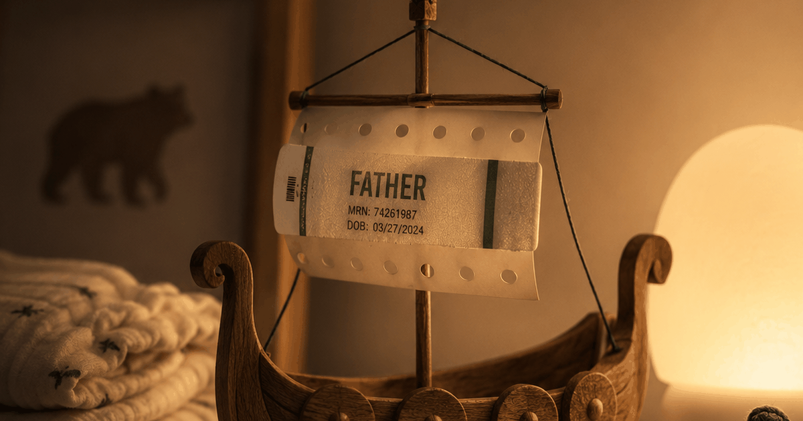

I've loved Norse culture for years — and when I finally read how the Vikings actually welcomed a newborn, one thing stopped me cold: they built a public ritual around the father accepting the child, while our modern version centers almost entirely on the mother. The need underneath is identical; the ritual is what we lost. In a meta-analysis of decades of studies, parents reported lower marital satisfaction than non-parents — and the dip was steepest for parents of infants (Twenge, Campbell & Foster, 2003), and I don't think the missing role for dads is unrelated.
I should come clean about my bias before I say anything else. I've been a Scandinavian-culture nerd for a long time — it started, embarrassingly on-brand, with the show Vikings, and it never left. My playlists are a who's-who of the genre: Brothers of Metal, Bathory, Amon Amarth. And in the weeks before my daughter was born, one song lived on repeat: Savage Daughter, the Ekaterina Shelehova version. A daughter on the way, and a song called Savage Daughter on a loop — yes, I heard it too.
So when I recently sat down, purely out of curiosity, to read how the Norse marked the arrival of a baby, I expected to be charmed by something folkloric and far away. Instead I got a small jolt of recognition — and a slightly uncomfortable thought about how mom-centric our own version has quietly become. Or maybe that's just my bubble. But it sent me down a rabbit hole, and here's what I found.
What they ritualized that we don't
The Vikings put the father at the center of the welcome. On the ninth night, the child was brought to him on the high seat; he took it onto his knee, water was sprinkled, the name was spoken, and the baby officially entered the family. The dad wasn't a bystander to the event — he was the event. That's the piece our modern life has no real equivalent for.
I went through the full set of their customs around childhood in the Viking age, but this is the part that stuck with me. Look at what we actually kept. The baby shower — for the mother. The cards, the casseroles, the visitors — mostly oriented around mom and baby, as they should be. But there is no moment, anywhere in our modern calendar, that turns to the man and says: you are now a father, and we see it. We didn't swap the rite for a better one. We just dropped it.
| Then (Viking age) | Now (modern) | What dads lost |
|---|---|---|
| Father publicly accepts the child on his knee | No rite marks the man becoming a father | A defined role and a moment of his own |
| Whole household present on the ninth night | Celebration centers on mother and baby | Community that "sees" the dad |
| Name carries the luck of an ancestor | Names chosen for taste, not lineage-luck | A felt link into the family line |
| Birth backed by charms, songs, midwives | Medicalized, efficient, often isolating | Shared scaffolding and meaning |
Why the missing ritual actually matters
It matters because a role you're never given is a role you can't step into. With no rite and no script, a new father's pull to be involved can curdle into feeling like a spectator in his own home — and the research backs this up. Fathers in peer-reviewed studies literally describe themselves as "present but invisible" (Rominov et al., 2021).
This isn't soft speculation, and I say it as the mom in my own house. The transition to parenthood reliably knocks a couple sideways, and dads are not exempt — a meta-analysis puts paternal depression in the perinatal year at around 13% (Cameron et al., 2016), often quietly, because nobody handed them permission to need anything.
"Many new dads don't want to tell their wives that they're feeling lonely because they don't want to complain when she's already dealing with a ton of new responsibilities. They'll suffer in silence."Charles Schaeffer, PhD, clinical psychologist (Fatherly)
The Vikings, for all their brutality, accidentally solved for this. A man stepping onto the high seat to claim his child in front of everyone is a man who knows exactly what his role is. Strip that away and you get the modern dad standing in the kitchen at 2 a.m., useful but unsure he counts. I didn't fully see that until I went looking at a culture a thousand years gone.
How first-time fathers described themselves in a peer-reviewed study of perinatal experiences — the exact gap a welcoming ritual used to fill.
How we're still exactly the same underneath
Here's the hopeful half: the need hasn't changed at all. A new family in 2026 wants the same things the Norse ritualized — to have the transition marked, to be named and seen, and for both parents to be claimed into it. We didn't lose the instinct. We just lost the container for it.
That's why this isn't a nostalgia piece, and it's definitely not me arguing we bring back the ninth-night rite (or most of what came with it). But the function — a deliberate, repeated, shared moment that says "you belong to this" — is rebuildable at kitchen-table scale. The Vikings used a household and a high seat. You can use five minutes and a fixed time.
One Norse habit that never died: the names
Here's the thread that survived: most Icelanders still don't have family surnames — they use patronymics, exactly as the Vikings did. Your last name is simply your father's (or sometimes mother's) first name plus -son or -dóttir, so Jón's daughter is "Jónsdóttir." Iceland even banned new family surnames in 1925 to protect the system.
This delighted the Norse nerd in me. In Iceland the old logic is still running live: a surname isn't handed down the family line, it's built fresh each generation. Jón Einarsson's son Ólafur becomes Ólafur Jónsson; his daughter becomes Sigríður Jónsdóttir. Siblings share no common "family name," Icelanders are listed in the phone book by first name, and a state naming committee has guarded the tradition since 1991. Since 2019, a non-binary child can even take -bur ("child") instead of -son or -dóttir.
The mainland is subtler. Sweden, Norway, and Denmark used the same living patronymics for centuries, then froze them into inherited surnames between roughly the 1850s and 1901 (Norway's law landed in 1901). So a Hansen or an Andersson is a fossilized "son of Hans," "son of Anders" — a patronymic that simply stopped moving. The Viking naming system didn't vanish; most of Scandinavia just pressed pause, while Iceland left it playing. Which is a strangely fitting epilogue: the one piece of the old naming world we kept is the piece that says whose child you are.
The year Iceland's Althing banned the adoption of new family surnames — locking in the patronymic system the Norse once used across the north.
Build your own tiny ritual tonight
A modern welcome ritual doesn't need a longhouse — it needs repetition and intention. Mark the moment out loud, pick a fixed nightly slot, add a small token of appreciation, and keep it for weeks. That's the whole thing: a structure that keeps both of you, dad included, inside the story rather than beside it.
- Mark the moment out loud. "We just became parents, and I want us to stay us, too." That sentence is your high seat.
- Pick a fixed nightly slot. Five minutes after the baby's down — not logistics, not the baby. Ritual is repetition, not grandeur.
- Give it a small token. One specific appreciation each night — research on responding warmly to a partner's good news ties it to closer, more satisfied relationships (Gable et al., 2004). That's the modern "luck" you pass on.
- Keep it for weeks. The ninth-night rite worked because it was expected and shared. A small nightly habit beats one big talk.
I'll admit the founder bias here too: this exact gap is why my co-founder and I built Regular. Not to bring back the runes — just to hand a couple the small, repeatable moment our culture stopped providing.
Frequently asked questions
How are modern parents and Viking families similar when a baby is born?
The underlying need is the same: for the new family to be marked, named, and backed by a community — and for the father to be claimed into it, not just the mother. The Vikings met that need with a public rite where the father accepted the child on his knee, with water, a name, and a gift. Modern families feel the same pull but usually have no ritual to channel it.
What did the Vikings do for the father that we don't?
They made the father's public acceptance the centerpiece of welcoming a newborn, often on the ninth night, with the whole household watching. Today the celebration centers largely on the mother — the baby shower, the cards — and there is no equivalent rite that formally marks a man becoming a father, which can leave dads feeling like spectators.
Why do new dads feel invisible after a baby?
Partly because the culture gives them no role to step into. Parents report lower marital satisfaction than non-parents, with the steepest dip for parents of infants (Twenge, Campbell & Foster, 2003), and fathers in research describe being "present but invisible" (Rominov et al., 2021). With no ritual and no script, the feeling has nowhere to go.
Can a small modern ritual actually help new parents?
Yes. The point of the Viking rite wasn't magic — it was a deliberate, repeated moment that said "you belong to this." A small modern equivalent, like a five-minute daily check-in between partners that isn't logistics or the baby, recreates that function: a marked moment of connection you can actually keep.
Is Regular trying to replace a cultural ritual?
Not replace — rebuild, in miniature. Regular is a daily five-minute prompt that gives a couple one small move to stay connected. It's a modern, private stand-in for the communal scaffolding the Vikings had and we mostly lost: a structure that keeps both partners, including the father, inside the story.
Do modern Scandinavians have patronymics instead of surnames?
Icelanders largely do: most use a live patronymic (or matronymic) — the father's or mother's first name plus -son or -dóttir — rather than an inherited family surname, and Iceland banned new family names in 1925. In Sweden, Norway, and Denmark the old patronymics were frozen into fixed surnames between the 1850s and 1901, so names like Hansen or Andersson are fossilized patronymics that no longer change each generation.
Keep readingWhy new dads feel rejected after a baby · Lonely as a new dad? Why it happens and what helps · How relationships actually work after a baby

Co-founder of Regular. Writes about relationships, parenthood, and the science of how couples stay close after a baby.
About Regular — the relationship app for new dads, built by a small team of parents who needed it themselves. Small, science-backed moves with your partner, not big talks.
This is a personal essay drawing on saga literature, law codes, and peer-reviewed research; some details of pagan-era custom are reconstructed and debated. Regular helps couples stay connected day to day — it isn't medical or psychological advice. If you or your partner may be experiencing postpartum depression, please talk to a professional.